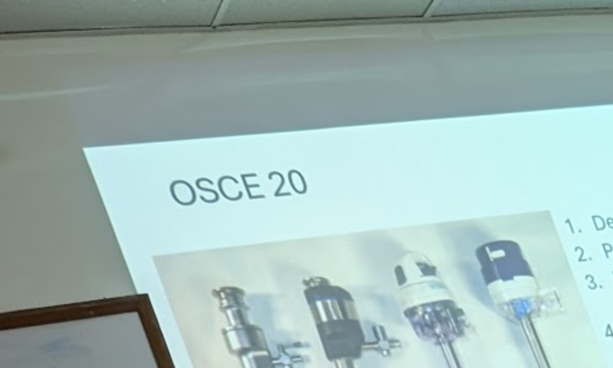
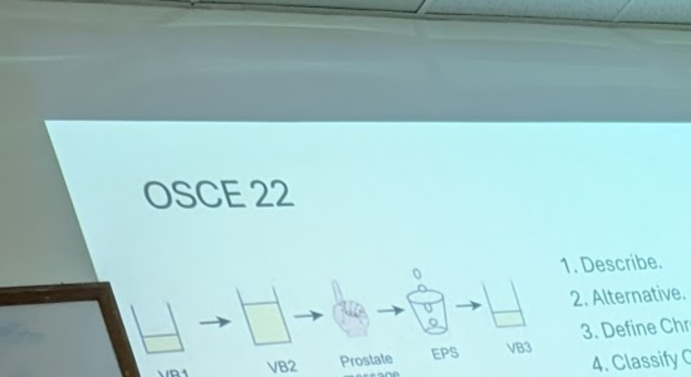
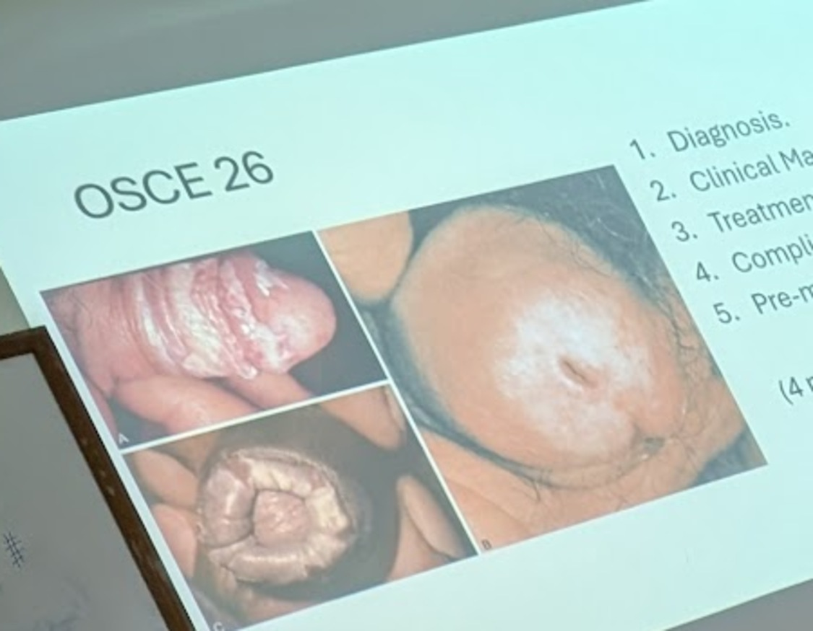
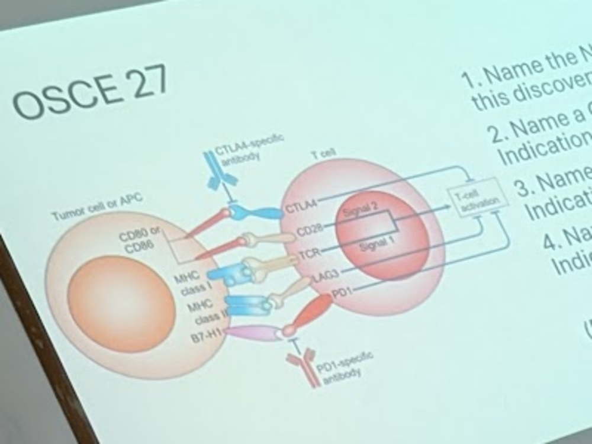
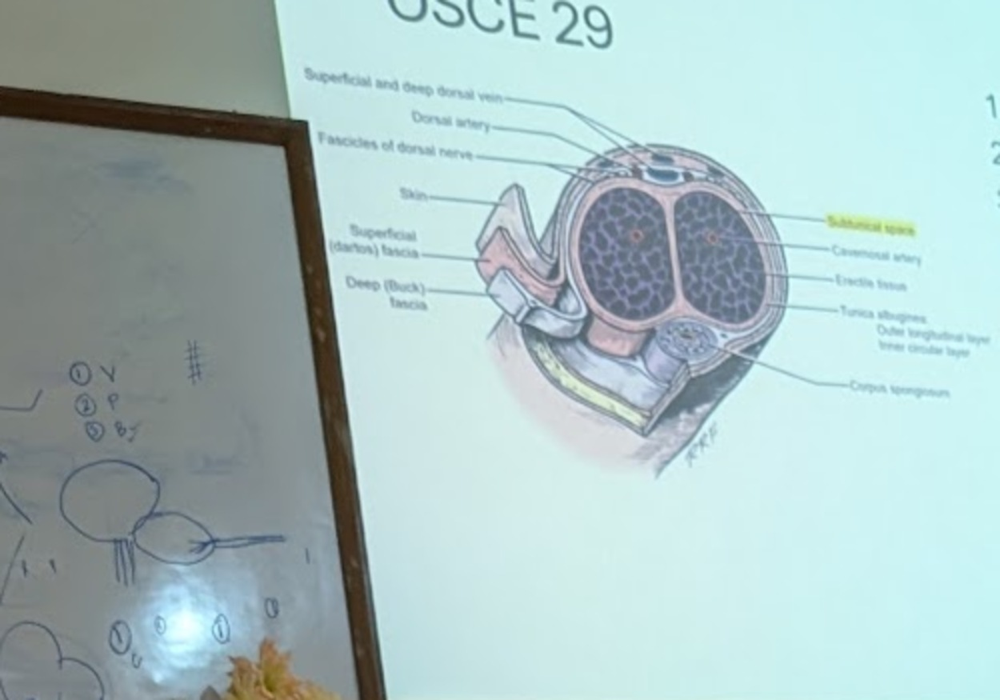
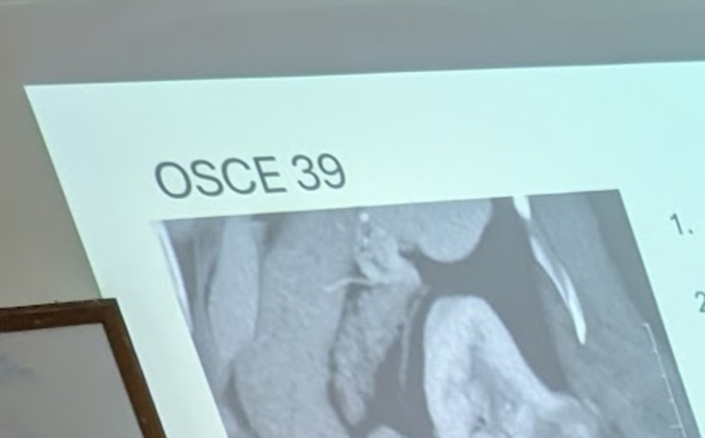
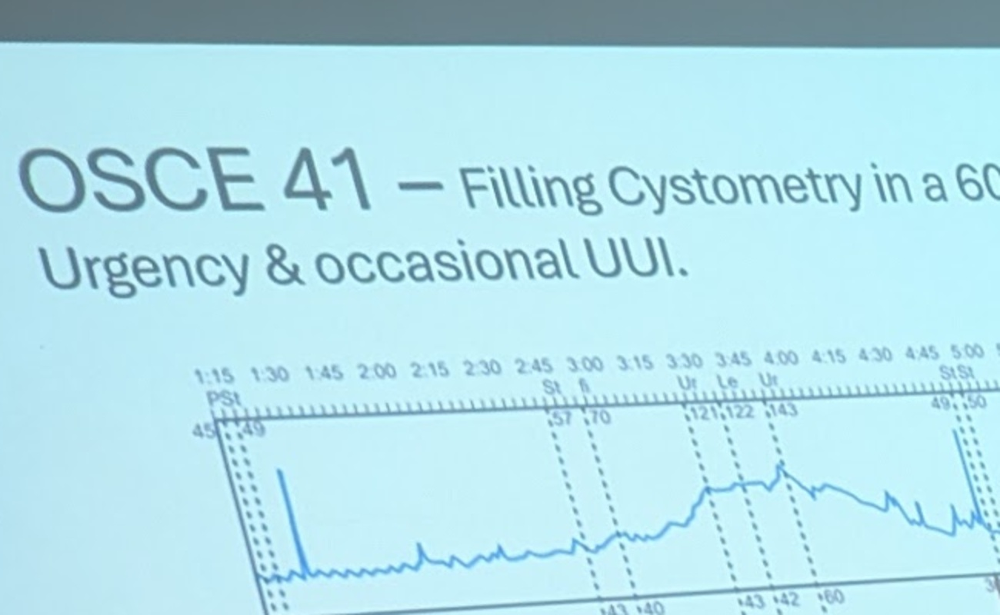

OSCE 3 — Post-TURP fluid overload (TUR Syndrome)
1.Hypoxia, Hypotension – SA / Bleeding, Distended Bladder, TUR Syndrome – ± perforation, Sepsis, Drug reactions.
2.TUR Syn – A syndrome of fluid overload + dilutional hyponatremia + glycine toxicity.
3.0.5–2% – >45g prostate volume / >60mins RST.
4.Hypertension, Dyspnea, Chest pain, Bradycardia, Arrythmias, Visual Disturbances, CNS – agitation / seizures if S. Na < 115.
5.Prevention, Early Recognition, Definitive – Furosemide + Hemostasis + Quick termination of procedure, Bloods – CBP/RFT, Antibiotics?, Communication – HDU/ICU.
6.Prevention – Planning, Technique, Preop optimization.
- TURP fluid absorption: ~20 ml/min absorbed; ~10 ml blood loss per gram of tissue resected.
- Water (irrigant) > Glycine irrigant for risk of cerebral / hepatic / renal toxicity.
- Threshold: >45g prostate / >60 min resection time → ↑ risk (word after this illegible).
- Incidence quoted: 0.5–2%.
OSCE 4 — Autonomic Dysreflexia
1.Autonomic Dysreflexia, Hypoglycemia, Sepsis.
2.SCI above T6 cord level [~T2 vertebral level] – Disordered exaggerated sympathetic response.
3.Any noxious stimulus below the level of SCI – distended bladder / catheter change / loaded bowel / UTIs.
4.Headache, blurred vision, profuse sweating & flushing above SCI level + Pale skin below, Hypertension, Intracranial bleeds, Convulsions.
5.Awareness + Early recognition + Avoid triggers + Patient supported upright + Monitored anti-HTNs.
OSCE 5 — Neurogenic Bladder / LUTS Work-up
1.History: Neurological – LUTS – Incontinence – 'DIAPPERS' – ED – Bowels – Medications. PE: L/E, DRE, Focused Neuro.
2.Parkinson's – Parkinson's Plus? – BPE – NDO – UAB – Medications.
3.IPSS – Bladder Diary – PVR – Urinalysis – S.Creat – MFR.
4.UDS: BOO vs NDO vs UAB vs DSD. Bladder Sensations, DO, UI, Compliance, FBC, Pdet@Qmax, Sphincter activity, PVR.
5.Neurological – α blockers – 5ARi – Anticholinergics – CISC – TURP.
- Neurological evaluation red-flag signs — mnemonic DIAPERS: Delirium, Infection, Atrophic urethritis, Drugs/Psychology, Excessive urine output, Restricted mobility, Stool impaction.
- Parkinson's Plus → sphincter problems + more neurological symptoms (vs. idiopathic Parkinson's).
- Avoid TURP in these patients (i.e., in Parkinson's Plus / significant neurogenic sphincter involvement); reasoning line cut off in the photo.
- UDS: Abraham–Griffiths number/index → used to derive the Bladder Outlet Obstruction Index (BOOI).
OSCE 11 — BPE — Predictors of Progression & Surgical Indications
1.Age > 70 years
2.IPSS > 7
3.MFR < 12 ml/sec
4.PSA > 1.4 ng/ml
5.Prostate Volume > 30 ml
6.Olmstead County Study data
1.Failed Medical Management.
2.Refractory AUR.
3.Recurrent AUR.
4.HPCR.
5.Recurrent UTIs sec to BPO.
6.Recurrent Hematuria due to BPE.
7.Bladder calculi due to BPO.
8.Bladder diverticulum due to BPO.
- Patient perceives worsening of IPSS if the score increases by >4 points.
- TWOC (trial without catheter) timing → 72 hours.
OSCE 12 — Haematuria Work-up
1.RBC Cast.
2.Glomerular bleeding.
3.Urine C/S, RFT, immune profile → Imaging / Cystoscopy.
4.BP > 140/90, ACR > 30 mg/mmol, PCR > 50 mg/mmol, eGFR < 60 ml/min.
5.VH, sNVH, > 40yrs, Persistent aNVH (2 out of 3 times).
- Casts: know the types and where in the nephron/tract each is found (own notes to be filled in per type).
- DJ stent tolerability: symptom questionnaire → USSQ (Ureteric/stent Symptom Score); handwriting reads 'SRS questionnaire → USS score'.
- Mid-ureteric injury: avoid uretero-ureterostomy here as the usual repair (better suited to upper/lower ureteric injury) — anastomosis under tension is the concern in the mid-ureter.
- Names noted alongside ureteric injury/stenting discussion: 'Pfeifer, Hulbert' (not verified against a reference).
- Pearle & Mokhmalji → comparative reference for DJ stent vs. percutaneous nephrostomy (PCN) drainage of obstructing stones with infection.
OSCE 14 — Penile Doppler / Cavernosal Injection Study for ED
1.A normal CIS test, based on the assessment of a sustained rigid erection, signifies normal erectile hemodynamics. Alternative diagnoses of psychogenic, neurogenic, or endocrinogenic ED may then be considered.
2.High-resolution (7.5 to 12 MHz) real-time ultrasonography and color-pulsed Doppler visualizes the dorsal and cavernous arteries selectively and hemodynamic blood-flow analysis can be performed.
3.Cavernous arterial insufficiency is suggested when PSV is < 25 cm/s; a PSV consistently > 35 cm/s defines normal cavernous arterial inflow.
4.RI > 0.9 has been associated with normal penile vascular function, and that < 0.75 is consistent with veno-occlusive dysfunction.
OSCE 15 — Generic Peri-operative Complication Framework
1.Attend yourself → Junior Faculty → Senior Resident.
2.Pre-op Clinical Notes & Imaging → Indication for surgery.
3.Comorbidities & Labs.
4.Infrastructure for Fluoroscopy/USG – Cystoscopy/Stenting/PCN.
5.Specific Intra-op 'problem'.
6.Identify issue.
7.Ureter identification – Injury? – Level? – Stage?
8.Treatment options.
9.Documentation.
10.Follow-up.
OSCE 16 — Pre-operative Risk Assessment
1.ASA Risk. (2 marks)
2.Performance Status – ECOG / Karnofsky. (3 marks)
3.Co-morbidity Index – Charlson / Duke's. (3 marks)
4.Frailty Index. (1 mark)
5.DVT / PE Risk – Well's / Caprini. (3 marks)
6.Nutritional assessment. (2 marks)
7.DVT & Antibiotic prophylaxis. (3 marks)
8.Renal parameters – Urinary Diversion Implications. (3 marks)
OSCE 18 — PCNL — Renal Pelvic Perforation
1.Renal pelvic perforation confirmed with injection of contrast material through flexible nephroscope.
2.Terminate procedure promptly with DJ + PCN.
3.Careful dilatation + every subsequent step under good vision.
4.Reimaging after recovery + Staged procedure.
OSCE 20 — Laparoscopic Trocars & Access
1.Primary trocar sites used.
2.Primary trocar placement techniques & precautions.
3.Principles of trocar site positioning & important angles maintained.
4.Laparoscopic visual ergonomics.

1.Various trocar designs (left to right) – reusable blunt-tipped, reusable bladed, and two disposable visual obturator fascial dilating designs.
2.Umbilical – Periumbilical – Palmer's point – McBurney's point.
3.Veress & Hasson's – Aspiration, Hanging drop, Low intra-abdominal pressure, Uniform distension.
4.≥ 1 hand-width apart (8–9cm), Azimuth angle, Manipulation angle, Elevation angle: Fulcrum 1:1.
5.OT table height = 0.49 × surgeon height; Monitor distance = 5 × diagonal length of monitor.
OSCE 21 — Laser Lithotripsy in Endourology
1.Types (2 marks)
2.Techniques – Settings & Indications for each. (10 marks)
3.Precautions & Complications. (8 marks)
1.Holmium & TFL.
2.Ho:YAG Fragmentation – '0.6J + 6Hz' – Ureter + Kidney + retrieval. Dusting – 0.4J + 50Hz – Renal Pop-corning – 1J + 20Hz – Calyceal Pop-dusting – 0.5J + 80Hz – Calyceal
3.'Snow-storm', bleeding/perforation, scope damage – proper positioning, activation & setting + adequate irrigation/suction.
OSCE 22 — Chronic Prostatitis / 4-Glass Test

1.Describe.
2.Alternative.
3.Define Chronic Prostatitis.
4.Classify Chronic Prostatitis.
5.Management of each type.
1.4-Glass Test (Meares–Stamey Test).
2.2-Glass Test (PPMT).
3.Symptoms + C/S + > 3 months duration.
4.Classification table:
| Classification | Specimen | VB1 | VB2 | EPS | VB3 |
|---|---|---|---|---|---|
| CAT II | WBC | – | +/–* | + | + |
| Culture | – | +/–* | + | + | |
| CAT IIIA | WBC | – | – | – | – |
| Culture | – | – | – | – | |
| CAT IIIB | WBC | – | – | (cut off in photo) | (cut off in photo) |
| Culture | – | – | (cut off in photo) | (cut off in photo) |
CAT IIIB row partly cut off at the right edge of the photo; its WBC/culture pattern is not visible.
5.NSAIDS + Antibiotics + 5ARis + Amitriptyline + Pregabalin.
OSCE 24 — RARP — Perioperative Care ('Trifecta')
- Life Expectancy + Performance status + Comorbidity index. Staging + Risk stratification. (5 marks)
- Pre-op prep. – PFMT / PDE5i (4 marks)
- Intra-op – Bleeding / Visceral injury (3 marks)
- Post-op – Cath / ambulation / diet / analgesia / discharge plan. (3 marks)
- F/U – HPR / PSA / 'Trifecta' (3 marks)
- Biochemical recurrence – Adjuvant treatment? – RT / ADT (2 marks)
OSCE 25 — Renal / Urogenital Trauma (ATLS-based)
1.ATLS Principles – Primary & Secondary Survey – Life-threatening non-urological issues & assess hemodynamic status.
2.Mechanism of Injury → Blunt / Penetrating / High-velocity.
3.Pre-morbid conditions – 'AMPLE' history.
4.History & General Exam + Abdo + Pelvic + Back exam [Log-roll].
5.Renal / Ureteric / Bladder / Urethral Injury / Ext genitalia injury?
6.Imaging – 'FAST' → CECT A&P – Plain / Arterial / Delayed.
7.Bloods – CBP + RFT.
8.Communication + Documentation.
9.Immediate vs. Delayed / Staged procedures.
10.Outcomes / Prognosis.
OSCE 26 — BXO / Phimosis

1.Diagnosis.
2.Clinical Manifestations.
3.Treatment options.
4.Complications.
5.Pre-malignant?
1.BXO – Lichen sclerosus et atrophicus.
2.Phimosis, Meatal stenosis, Urethral strictures, UTIs, Pre-malignant.
3.Circumcision, VIU, Urethroplasty.
4.Peri-urethral abscess, SCC.
5.If 'atypia' is seen on HP.
OSCE 27 — Immune Checkpoint Inhibitors (Immunotherapy)

1.Name the Nobel laureates for this discovery.
2.Name a CTL4 inhibitor + Indication + Supporting Trial.
3.Name a PD1 inhibitor + Indication + Supporting Trial.
4.Name a PD-L1 inhibitor + Indication + Supporting Trial.
Answer supplied from general knowledge; no answer slide was photographed.
1.Nobel Prize in Physiology or Medicine 2018 was awarded jointly to James P. Allison and Tasuku Honjo for their discovery of cancer therapy by inhibition of negative immune regulation.
2.CTLA-4 inhibitor: Ipilimumab — indicated in metastatic melanoma (often combined with nivolumab), and in combination regimens for renal cell carcinoma; pivotal trial: Hodi et al., NEJM 2010 (MDX010-20).
3.PD-1 inhibitors: Nivolumab / Pembrolizumab — indicated in metastatic RCC (e.g., CheckMate 025 for nivolumab after prior anti-angiogenic therapy) and urothelial carcinoma (e.g., KEYNOTE-045 for pembrolizumab).
4.PD-L1 inhibitor: Atezolizumab / Avelumab / Durvalumab — indicated in metastatic urothelial carcinoma and as maintenance therapy (e.g., JAVELIN Bladder 100 for avelumab maintenance).
OSCE 28 — Varicocele
1.Hudson's Classification – Grade I–III.
2.> perpendicular drainage of left spermatic vein into renal vein. – Metabolites in renal venous circulation. – Venous Valves – 'Nut-cracker' phenomenon SMA & left Renal vein.
3.Unrelenting pain – OAT in Subfertility – Adolescents with Grade 3 varicocele + pain – Testicular volume discrepancy.
4.Palomo retroperitoneal – Ivanissevich Inguinal – Marmar subinguinal microscopic.
OSCE 29 — Penile Anatomy — Peyronie's / Fracture / Degloving

1.Peyronie's plaque location.
2.Penile Fracture layer.
3.Penile degloving plane.
4.Layer breached for 'Butterfly pattern' urinary extravasation.
5.Sequence of penile repair after amputation & Ischemic times permissible.
1.Plaque formation layer → subtunical space – tunica albuginea.
2.Penile fracture layer → tunica albuginea.
3.Penile degloving plane → between Dartos & Buck's fascia.
4.Butterfly-shape urinary extravasation → Buck's fascia ruptured.
5.Sequence of penile repair → 16 hrs (ischemic time) permissible.
6.Urethra → corpora spongiosum → corpora cavernosum (layer order).
Checklist from a classmate's handwritten notes.
OSCE 30 — Testicular Biopsy
From a classmate's handwritten notes.
1.Biopsy indications → severe OATS (oligo-astheno-teratospermia), Azoospermia → with normal testicular volume and normal S. FSH.
2.TESE biopsy: <40yr patient, <12ml testis, H/O undescended testis (UDT) → subfertility work-up.
3.3-point fixation → avoid the poles and anterior surface (of the testis, to protect the blood supply / avoid the appendages).
4.mTESE (microdissection TESE) → treatment of choice (in non-obstructive azoospermia).
The “②TESE Biopsy <40yr pt, <12ml testis, H/O UDT → Subfertility” line and the final “mTESE →” line are partly obscured by a strike-through in the source.
OSCE 31 — Metabolic Syndrome — Urological Implications
Question-stem slide not photographed; topic taken from the three checklist slides.
| WHO (1998) | EGIR (1999) | AACE (2003) | IDF (2005) | NCEP ATP III (2005 revision) | |
|---|---|---|---|---|---|
| Required component | IR (IGT, IFG, T2DM, or additional evidence of IR) | Hyperinsulinemia (plasma insulin >75th percentile) | IR (IGT or IFG) | CO (WC) | None |
| Criteria | Required component and ≥2/5 below | Required component and ≥2/4 below | Required component and any below, based on clinical judgment | Required component and ≥2/4 below | ≥3/5 below |
| Obesity | WHR >0.9 (M), >0.85 (F), or BMI >30 kg/m² | WC ≥94cm (M), ≥80cm (F) | BMI ≥25 kg/m² | — | WC >102cm (M), >88cm (F) |
| Hyperglycemia (mg/dL) | + | + | + | Fasting glucose ≥100 | Fasting glucose ≥100 or Rx |
| Dyslipidemia (mg/dL) | TG ≥150 or HDL-C <35 (M), <39 (F) | TG ≥150 or HDL-C <39 | TG ≥150 and HDL-C <40 (M), <50 (F) | TG ≥150 or Rx, HDL <40 (M), <50 (F), or Rx | TG ≥150 or Rx, HDL <40 (M), <50 (F), or Rx |
| Hypertension (mmHg) | >140/90 | >140/90 or Rx | >130/85 | >130 (S), >85 (D) or Rx | >130 (S), >85 (D) or Rx |
| Other criteria | Microalbuminuria | — | Other features of IR | — | — |
- LUTS
- ED
- Subfertility.
- Urolithiasis – formation & recurrence.
- Urological Cancers – RCC, PC.
- Renal function.
- Cardiac function – surgical fitness / complications.
- ADAM – 'Androgen Deprived Aging Male' – Late onset Male Hypogonadism <12 nmol/L (<3.5 ng/ml).
- S. Testosterone < 8 nmol/L [= 300 ng/dL] requires supplementation.
- ↓ Libido < 12 nmol/L.
- ED < 8 nmol/L.
- ↓ Well-being < 12–14 nmol/L.
- CBP, RFT, LFT, PSA
OSCE 32 — Azoospermia — Evaluation & Management
![Photo of the projected OSCE 32 checklist slide (2 marks for each box): azoospermia flowchart. Bilateral absence of vasa leads to a CFTR panel for patient and partner. Otherwise, semen volume under 1 mL leads to post-ejaculatory urinalysis: sperm absent means transrectal ultrasound for ejaculatory duct obstruction, sperm present means retrograde ejaculation. Otherwise, testicular long axis above 4.6 cm with FSH 7.6 or less points to obstruction (96%), and long axis 4.6 cm or less with FSH above 7.6 points to spermatogenic dysfunction (89%). The right edge of the slide is cut off.](../img/osce-32.jpg)
OSCE 33 — Erectile Dysfunction — Causes, Evaluation & Management
1.Causes (6 marks)
2.Evaluation (7 marks)
3.Management (7 marks)
Slide reads “Management 97 marks)”; taken as 7 marks.
- Arterial – arterial, arteriolar.
- Cavernosal – tunica albuginea, cavernous muscle, gap junction, endothelium, fibroelastic trabeculae, emissary vein.
- Neurologic – sensory, motor, autonomic, neurotransmitters.
- Hormonal – testicular, pituitary, thyroid.
- History – Primary / Secondary / Family h/o CAD / Drug history.
- Physical Exam – General, BMI, BP. – Secondary Sexual Characters – Tanner's classification.
- External Genitalia – plaques + DRE – Prostate / BCR + Spine.
- GlyHb, FLP, S. Testosterone.
- Clinical Psychology.
- Trial with PDE5i – Counselling / dosing & S/E
OSCE 34 — PDE5 Inhibitor Counselling
- ED – confirm (PE) – History / Physical examination – Organic / Psychogenic?
- IIEF score
- Co-morbidities / Exercise tolerance – '1 mile in 20 mins'
- GlyHb / FLP / S. Testosterone
- Compliance – Which PDE5i? – dose – duration – frequency – number of doses taken – adverse effects – other PDE5is trial.
- Sexual activity / Partner issues.
- Libido / Ejaculatory function.
- Ancillary tests – NPT / Penile Doppler
- Other treatment modalities – From injectables / MUSE to Prosthesis.
1.Contraindications – CAD, CVA, HTN, Arrythmias. (3 marks)
2.S/E – Flushing, Congestion, Headache, Visual disturbances, Back pain. (3 marks)
3.Sexual Stimulation mandatory. (3 marks)
4.Dosing & Timing. (3 marks)
5.Graduated Dose Escalation. (3 marks)
6.Duration of use – In maximum dose tolerable for 6–10 attempts. (3 marks)
7.Trial with other PDE5i. (1 mark)
8.'Failure' – Vacuum pump / Caverject / Prosthesis. (1 mark)
OSCE 35 — Iliac Vessel Anatomy
| Artery Name | Origin | Supplies |
|---|---|---|
| Middle sacral | Aorta | Sacral nerves and sacrum |
| External iliac branches: | ||
| Inferior epigastric | External iliac | Rectus abdominis muscle and overlying skin and fascia |
| Deep circumflex iliac | Inferior epigastric / External iliac* | Inguinal ligament and surrounding structures laterally |
| Pubic | Inferior epigastric* | Inguinal ligament and surrounding structures medially |
| Cremasteric | Inferior epigastric* | Vas deferens and testis |
| Internal iliac branches: | ||
| Superior gluteal | Posterior trunk | Gluteus muscles and overlying skin |
| Ascending lumbar | Posterior trunk | Psoas and quadratus lumborum muscles and adjacent structures |
| Lateral sacral | Posterior trunk | Sacral nerves and sacrum |
| Superior vesical | Anterior trunk | Bladder, ureter, vas deferens, and seminal vesicle |
| Middle rectal | Anterior trunk | Rectum, ureter, and bladder |
| Inferior vesical | Anterior trunk | Bladder, seminal vesicle, prostate, ureter, and the neurovascular bundle |
| Internal pudendal | Anterior trunk | Rectum, perineum, and external genitalia |
| Obturator | Anterior trunk | Adductor muscles of the leg and overlying skin |
| Inferior gluteal | Anterior trunk | Gluteus muscles and overlying skin |
* Origin for the Deep circumflex iliac / Pubic / Cremasteric rows is ambiguous in the photographed table.
OSCE 36 — Ureteric Colic — Indications for Surgical Intervention
1.Solitary left kidney.
2.Intractable pain inspite of adequate analgesics.
3.Deranged RFT – ↑ Serum Creatinine.
4.Infected System ± Sepsis / EPN – ↑ TLC.
5.Occupation – Pilot.
6.High grade obstruction – Urinoma.
7.Patient request. (2 marks)
OSCE 37 — Bilateral Staghorn Calculi
1.B/L Staghorn Calculi.
2.Hyperparathyroidism – RTA – Hyperuricemia – Hyperoxaluria – Cystinuria – Struvite – B/L PUJO – Renal Koch's.
3.Asymptomatic – AKI – CKD – Urosepsis – Haematuria – Loin pain.
4.Relieve Pain – Unobstruct – Treat Infection – Preserve renal function – Treat metabolic complications like hyperkalaemia & acidosis.
5.Symptomatic side – Better functioning side – Infected side.
OSCE 38 — Urinary Retention (AUR / CUR)
- Evaluation
- Types & causes of Urinary Retention
- Management & Outcomes of each.
1.History – Prior LUTS / medications / surgery – LBP – Constipation – Preceding Fever – Neurological s/s.
2.Physical Exam – DRE, USG KUB, RFT, TLC, GlyHb.
3.Delayed PSA
4.AUR – Spontaneous or Precipitated, CUR – LPCR or HPCR, Acute on CUR.
5.Catheterization – Urethral / SPC → Definitive mgmt. – AUR – 80% successful TWOC; – CUR – 40% successful TWOC – after med / surg mgmt.
OSCE 39 — Nephron-Sparing Surgery (Partial Nephrectomy)

1.Contraindications for Nephron-Sparing Surgery.
2.NSS Techniques + associated Ischemic times.
1. Technical issues
- Cold ischemia time greater than 45 minutes (consider extracorporeal approach)
- Less than 20% of global nephron mass retained
Cancer-related issues
- Diffuse encasement of renal pedicle by tumor
- Diffuse invasion of central collecting system
- Tumor thrombus involving major renal veins
- Adjacent organ invasion (stage cT4)
- Regional lymphadenopathy (stage cT×N1)
2. Enucleation / Enucleo-resection
- Cold ischemia
- Zero-ischemia (CLOCK Trial)
OSCE 40 — Adrenal Incidentaloma
1.Right Adrenal Incidentaloma.
2.Clinical – Pheo. – Cushing's – Conn's.
3.Functional Evaluation – Metanephrines, Cortisol, Aldosterone.
4.Anatomical Evaluation – CECT / MIBG / DOTATATE.
5.Pre-op optimization – Roizen's Criteria + Hydration.
6.Intra-op precautions – Adrenal Vein early + Minimal tumor handling.
7.Post-op care – BP, Electrolytes, Arrythmias.
8.Clinical F/U + Repeat biochemistry ± repeat imaging.
OSCE 41 — Urodynamics — Detrusor Overactivity

1.Detrusor Overactivity – Phasic with Incontinence.
2.OAB vs OAB + BOO.
3.Voiding Phase UDS.
4.Management: – Education & Lifestyle modifications. – Anticholinergics. – BOO management. – Containment. – Intravesical Botox. – Neuromodulation. – Bladder Augmentation.
OSCE 42 — Lower Urinary Tract Symptoms (LUTS) — Causes
- History
- Physical Exam – L/E, DRE, Spine, Focussed Neurol.
- IPSS
- Bladder Diary
- Urinalysis + C/S.
- PVR
- S. Creat / USG.
OSCE 43 — PSA — Normal Values & Kinetics
From a page dated 13 May 2026; no question stem noted.
1.Normal PSA value by age category: 40–50 yrs → 2.5 ng/ml; 50–60 yrs → 3.5 ng/ml; 60–70 yrs → 4.5 ng/ml; 70–80 yrs → 6.5 ng/ml.
2.PSA half-life (T½) → 2–3 days.
3.PSA density (PSAD) → < 0.15 ng/ml (per ml of prostate volume).
4.PSA doubling time (PSADT) → > 3 years is considered favourable.
OSCE 44 — Prostate Cancer Screening Counselling
1.32% of men >50yrs have histological evidence of prostate cancer.
2.(Second point not legible in the note.)
3.Offer early PSA testing to men with a family history of prostate cancer.
4.Risk-adapted screening strategy (rest of line cut off in photo).
Points 2 and 4 partly cut off at the edge of the photo; only points 1 and 3 legible.
OSCE 45 — Antenatal Hydronephrosis
1.US findings, differentials of prenatal HUN (DIPS — see below).
2.Subsequent antenatal evaluation / management.
3.Postnatal evaluation & management.
4.Indications for surgery/intervention & timing.
1.Differentials (DIPS?) — Hydronephrosis.
2.PUJO, VUJ reflux, ectopic ureter, ureterocele, Posterior urethral valves (PUV), Prune Belly syndrome.
3.Follow-up USG at term → UTD (Urinary Tract Dilatation) classification.
4.Postnatal USG (timing partly illegible; ~1 week) + RFT & MCUG; isotope renogram at 3 months; drop of >10% function on repeat renogram is significant.
5.Indications to intervene: symptomatic UTI, APD (antero-posterior diameter) 30–50mm, and <40% split function.
Additional OSCEs — From Kasturba Hospital Progress-Sheet Notes
OSCE 69 — Immunosuppression in Renal Transplant
Circled number partly smudged; read as 69.
OSCE 71 — Renal Tumour Management
1.cT2N0M0 (partly obscured; T-stage uncertain), Renal tumour management.
2.RTB (abbreviation not expanded in the note).
3.RENAL nephrometry score / risk stratification (handwriting reads 'Renal JMDC risk stratification').
4.CARMENA Trial – SURTIME Trial.
A neighbouring “Investigations Ordered” column also notes “NOTSS – non-technical skills” (Non-Technical Skills for Surgeons).
OSCE 72 — PSA 10ng/ml — Evaluation & Management
1.Life expectancy + ECOG + ECHO (cardiac fitness).
2.LUTS – IPSS – bothersomeness.
3.DRE ±, mpMRI, PI-RADS, prostate biopsy.
4.Risk stratification.
5.Treatment options — referencing the PIVOT and ProtecT trials.
OSCE 73 — TNM Staging — Renal Tumour
OSCE 74 — TNM Staging — Bladder Tumour
OSCE 75 — TNM Staging — Prostate Cancer
OSCE 76 (uncertain) — RIRS — Safety Parameters
Circled number hard to read; read as 76.
- Ureteral caliber, guidewire dimensions.
- Unfavourable calyx definition; safe operating time.
- Safe intra-renal pressure; consequences of higher pressures.
- Safe suction pressure; safe lasing power (in watts).
- Freiburg technique — for stenting.
OSCE 78 — Mini-PCNL (mPNL)
1.Definition, sheath-to-scope (ratio), safe operation duration.
2.Brödel's line and Hodson's line (relatively avascular planes used for renal access).
OSCE 79 — Prone vs. Supine PCNL
OSCE 80 — OT Notes for Radical Cystectomy
1.TNM, ASA, ECOG, ECHO.
2.Informed consent — continent diversion vs. stoma, complications, results.
3.Checklists — DVT & antibiotic prophylaxis.
4.OT procedure + PLND (extent, ± template).
5.Discharge plan — F/U + HPR (histopathology report).
OSCE 81 — OT Notes for mPNL
OSCE 82 — OT Notes for TURP
OSCE 83 — OT Notes for Partial Nephrectomy
Only the title was written in the source.
OSCE 84 — OT Notes for PFUI Repair
OSCE 85 — Renal Trauma — Imaging
1.Grading (of renal injury).
2.CECT (arterial + portal venous phase) — objectives of imaging.
3.CECT (arterial + portal venous phase) — phases required.
OSCE 86 — Distal Ureteric Injury
1.Mechanism of injury.
2.Evaluation.
3.Options based on length of the defect.
4.Indications & principles of each repair option.
OSCE 87 — Unsafe Bladder / High-Risk Urodynamic Findings
1.Impaired compliance (< ~20 ml/cmH₂O — exact cut-off partly illegible).
2.Detrusor–external sphincter dyssynergia (DESD) / Detrusor–internal sphincter dyssynergia (DISD).
3.High-pressure detrusor overactivity (DO); DLPP > 40 cmH₂O.
4.'Nurse's criteria' referenced for risk-stratifying unsafe bladders; exact criteria not spelled out in the note.
OSCE 88 — Urethral Surgery — Reference Values
1.1 Fr ≈ 0.3 mm.
2.6 Fr urethroscope corresponds to roughly a 6mm urethral plate (as noted).
3.Normal voiding implies a urethral caliber of >14 Fr.
4.A term resembling 'Pena Cava' was used, said to refer to the corpus spongiosum (not verified against a reference).
5.Distal bulbar stricture → dorsal BMG (buccal mucosa graft) location.
6.Proximal bulbar stricture → ventral BMG location.
7.Double-faced Palminteri graft (dorsal inlay + ventral onlay) — used for a urethral plate in the range of roughly 4–9mm (numbers partly unclear in the photo).
8.Asopa's technique prerequisite — urethral plate ≥ 10mm.
9.Obliterative stricture requiring excision — plate ≤ 4mm.
10.Opening Gallaudet's fascia permits the plane between bulbospongiosus muscle and Buck's fascia.
OSCE 89 — CRPC (Castration-Resistant Prostate Cancer)
1.Definition/Diagnosis — clinical, radiological, biochemical criteria.
2.Time to develop from HSPC (hormone-sensitive prostate cancer) — quoted as ~14 months.
3.Management principles — re-staging + treatment modalities.
4.Survival — quoted as ~42 months (on ADT alone).
OSCE 90 — Intravesical BCG
1.Strains — Danish 1331, TICE, Connaught, Pasteur, Frappier, Moscow, Tokyo.
2.Indications — high-risk NMIBC: CIS, pT1G3, TCC.
3.Dosage & schedule.
4.40–120mg intravesically, weekly for 6 weeks post-TURBT (induction).
5.Protocol: 6-week induction course + 1–3 years of maintenance therapy.
6.Side effects → LUTS, BCG sepsis (requires cessation of therapy), temporary treatment interruption, ATT (anti-tubercular therapy) and steroids for BCG sepsis.
OSCE 94 — Muscle-Invasive Bladder Cancer Counselling
1.Prognosis — 5-year survival ~50% (exact T-stage/N-stage breakdown partly illegible); 5-year local recurrence-free survival quoted as ~80% (N0) vs ~40% (N+).
2.Treatment options — NACT + RC (radical cystectomy) ± RT — bladder preservation — trimodality therapy.
3.Role of bladder preservation — solitary tumour <3cm, low stage, low grade, not near trigone, no hydronephrosis, no CIS.
4.Role of NAC (neoadjuvant chemo) — up to T2/T3 N0M0 — quoted as a 5–8% absolute 5-year survival benefit.
5.NAC regimen & selection criteria — cisplatin-based if eligible — Galsky criteria for cisplatin eligibility.
Some figures (exact T-stage, survival percentages) partly illegible in the source.
OSCE 95 — Pivotal Urology Trials
1.PROPSMA trial — PSMA-PET/CT vs. conventional imaging (CT abdomen/pelvis + bone scan) for staging metastatic prostate cancer.
2.PROMIS / PRECISION trials — multiparametric MRI first, shown to better detect clinically significant (Gleason pattern >3) prostate cancer than TRUS + systematic biopsy alone.
3.MTOPS / CombAT trials — combination medical therapy (α-blocker + 5-ARI) for BPH.
4.SMART trial — (detail illegible in the note; possibly related to SBRT/HDR brachytherapy fractionation).
5.CARMENA / SURTIME trials — role and timing of cytoreductive nephrectomy in metastatic RCC.
6.KEYNOTE-564 trial — adjuvant pembrolizumab in high-risk renal cell carcinoma.
7.CU-AA301 / AA302 trials — abiraterone acetate in metastatic castration-resistant prostate cancer (pre- and post-chemotherapy settings).
8.TAX 327 trial — docetaxel in metastatic castration-resistant prostate cancer.
9.Radical cystectomy vs. RT/trimodality trials for muscle-invasive bladder cancer (specific trial name not given).
OSCE 96 — Urethroplasty — Techniques & Outcomes
- DVIU — Direct Visual Internal Urethrotomy
- EPA — Excision and Primary Anastomosis
- DOBMG — Dorsal Onlay Buccal Mucosa Graft
- VOBMG — Ventral Onlay Buccal Mucosa Graft
- AAG — Augmented Anastomotic Graft (as best interpreted)
- Palminteri / (a second name, illegible) technique(s)
- NIABU (not expanded)
- NIABU (listed a second time in the note)
- ANTABO (not expanded)
- Perineal urethrostomy
Expansions of NIABU and ANTABO not identified.
OSCE 99 — Medical Ethics
OSCE 100 — The Operating Theatre — Standards
1.Optimal temperature — 20–22°C.
2.Optimal humidity — 50–55%.
3.Required air-flow changes — 20–40 per hour; laminar airflow ≥ 40 (units as noted, air changes/hour).
4.Designated areas & gowns.
5.Sterility-attaining techniques & steps — for resectoscopes / semi-rigid URS / nephroscopes / PCNL equipment.
6.Autoclave criteria — 121°C × 15–30 min, or 134°C × 3 min.
7.WHO Surgical Safety Checklist — main components: Team Briefing, Sign In, Time Out, Sign Out.
8.Surgical diathermy frequency.
9.Harmonic scalpel frequency.
10.Normal saline constituents, in mmol/L.
OSCE 101 — Urodynamics — Normal Values
1.Bladder Contractility Index (BCI) < 100.
2.Bladder Outlet Obstruction Index (BOOI) — the Abraham–Griffiths number.
3.ALPP (Abdominal Leak Point Pressure).
4.DLPP (Detrusor Leak Point Pressure).
5.Bladder compliance ≥ 30 ml/cmH₂O.
6.Qmax for a 60yr male ≥ 15 ml/s.
7.Pdet @ Qmax @ ≤ 40 cmH₂O.
8.Volume at first sensation (~first desire to void) — ~50% of bladder capacity.
9.Volume at normal desire to void — ~75% of capacity.
10.Volume at strong desire to void — ~90% of capacity.
OSCE 102 — USG — Normal Values
1.Renal dimensions & parenchymal thickness; seminal vesicle & testicular long-axis (TLA) measurements.
2.Bladder wall thickness.
3.Pampiniform plexus venous diameter (for varicocele grading on Doppler).
4.IPP (abbreviation not expanded in the note) grading.
5.TRUS probe frequency.
6.Renal arterial Resistive Index (RI).
7.Ellipsoid formula for prostate volume.
8.Penile arterial RI.
9.Penile Doppler — peak systolic velocity (PSV) and transducer frequency.
10.Penile Doppler — end-diastolic velocity (EDV).
Unconfirmed / Possibly Overlapping Numbers
- Haematuria — evaluation: malignancy risk factors (visible haematuria, age >?, smoking, occupational dye/rubber exposure — partly illegible); nephrology criteria (ACR >30 mg/mmol, PCR >?58? mg/mmol, hypertension, eGFR <60 ml/min/1.73m²); role & interpretation of urine cytology.
- Pregnant female with (right-sided) hydroureteronephrosis — management.
- Dietary recommendations for prevention of renal calculus recurrence.
- TNM staging & stage grouping — testicular cancer.
- NMIBC (non-muscle-invasive bladder cancer) risk stratification.
- TURBT — SOP & checklist.
- VUR (vesicoureteric reflux) management — determinants: age at presentation (1° vs 2° VUR), grade, laterality, BBD (bladder-bowel dysfunction)?, VUR in a duplex system, reflux nephropathy, conservative management components & compliance/response, surgical indications.
- Paediatric developmental milestones — cognitive, social, gross motor, fine motor (reference: Oxford handbook).
- Paediatric nocturnal enuresis — evaluation & management: primary vs. secondary, monosymptomatic vs. non-monosymptomatic, pathophysiology, natural history, management (behavioural, alarm therapy, pharmacotherapy).
- Paediatric UTI — referencing NICE guidance.
Circled numbers on this page not legible; no definite OSCE number assigned.
From a Second Classmate's Notes
OSCE 103 — Post-Radical Prostatectomy PSA Follow-up
1.Post-RP: undetectable PSA (<0.1–0.2 ng/ml, assay-dependent) within a few weeks of surgery.
2.PSA persistence: PSA ≥0.2 ng/ml on two occasions after RP → treatment failure.
3.PSA doubling time <1 year → suggests metastatic/micrometastatic recurrence.
4.PSA doubling time >1 year → suggests local recurrence.
5.Biochemical recurrence definition — PSA doubling using ≥3 PSA values over a period of not more than 3 months apart, analysed by log-slope/regression methods (e.g., a Camrada-style formula).
6.Post-RP histopathology (HPR): T-stage, margin status, PLND nodal status.
7.Other factors: post-op PSA at 6 weeks; whether adjuvant RT/ADT is being considered based on adverse features (positive margin, extraprostatic extension, seminal vesicle invasion — 'Campbell' criteria referenced).
OSCE 104 — Urethroplasty — Graft/Technique Selection
1.DVIU — short segment, non-traumatic, flimsy/less dense stricture, no false passage; best suited to a short (<2cm) proximal bulbar stricture.
2.EPA (Excision and Primary Anastomosis) — short segment stricture (<2cm).
3.DOBMG (Dorsal Onlay BMG) — distal bulbar stricture, longer/more dense stricture, >2cm.
4.VOBMG (Ventral Onlay BMG) — proximal bulbar stricture, >2cm.
5.Dorsal-onlay (Barbagli technique) vs. ventral-onlay approaches — dorsal graft tends to be used for a long-segment stricture with a well-vascularised bed; ventral approach cited as 'Palminteri / Kulkarni' technique.
6.Choice of graft bed and approach depends on stricture length, location, and vascularity of the spongiosum.
Overlaps with OSCE 96 (Urethroplasty — Techniques & Outcomes).
OSCE 105 — Intractable / Haemorrhagic Cystitis — Drug Options
1.Bedaquiline — anti-TB drug, used in the context of MDR-TB treatment (context on this page otherwise relates to bladder drugs, so exact relevance to cystitis wasn't fully clear from the note).
2.Belzutifan — HIF-2α inhibitor; used in von Hippel–Lindau–associated RCC.
3.Duloxetine — SNRI; used for stress urinary incontinence (adjunct); non-adherence and SSRI/SNRI interaction with tricyclics (e.g. amitriptyline) noted; contraindicated with diabetic cystopathy in the note (reason not specified).
4.Amitriptyline — adjunct for neuropathic bladder pain / chronic pelvic pain, choose based on bladder-vs-bowel-predominant symptoms.
5.Silver nitrate — intravesical instillation, historically used for treatment of chronic (haemorrhagic) cystitis.
6.Everolimus — mTOR inhibitor, used for angiomyolipoma (multifocal, large tumour) and in tuberous sclerosis complex-related AML/renal complications.
7.Acetohydroxamic acid — urease inhibitor, used to reduce struvite stone recurrence.
8.Pentosan polysulfate (PPS) — used for interstitial cystitis / bladder pain syndrome.
9.Tolvaptan — vasopressin V2-receptor antagonist, used in ADPKD (autosomal dominant polycystic kidney disease) to slow total kidney volume growth.
10.Pyridoxine (Vitamin B6) — adjunct for treatment of primary hyperoxaluria (types depending on the enzyme defect).
11.Reference to treatment of primary hyperoxaluria in general.
Some drug–indication pairings partly illegible in the source (bedaquiline's relevance here; a note on “diabetic cystopathy” as a contraindication for duloxetine).
OSCE 106 — Urological Drugs — Notable Side Effects
1.Amiodarone — epididymo-orchitis (rare but recognised urological side effect).
2.Indinavir — radiolucent (indinavir) stones.
3.Solifenacin vs. mirabegron — solifenacin: dry mouth, constipation; mirabegron: accelerated QT prolongation risk, cognitive effects less prominent than antimuscarinics.
4.Tadalafil — low back pain, altered colour vision (less prominent than with sildenafil), myalgia.
5.Levofloxacin (a fluoroquinolone) — enteropathy/tendinitis, tendon rupture risk.
6.Septran (co-trimoxazole) — Stevens-Johnson syndrome risk; avoid in first trimester and in patients with G6PD deficiency (noted as 'G6PD-Do not cap').
7.Finasteride — decreased libido, breast pain/gynaecomastia, erectile dysfunction; most side effects reversible on stopping; 'Post-Finasteride Syndrome' noted as a persistent-symptom entity after stopping the drug.
8.ACE inhibitors — acute kidney injury, hyperkalaemia in susceptible patients (e.g. bilateral renal artery stenosis).
9.Sunitinib (and related TKIs) — cardiac toxicity, hand-foot syndrome, hepatotoxicity, hypothyroidism.
OSCE 18 — PCNL Renal Pelvic Perforation
- Sequential dilation vs. under-vision (visual obturator) dilation for renal access.
- Calyceal puncture: end-on vs. rotational entry, fluoroscopic control, in line with the infundibulum, favouring a more medial-side-of-pelvis puncture.
- Avoid a posterior-segmental calyx puncture; stay within the line of Petit's triangle to avoid bowel injury.
- Reimaging & recovery — staged procedure if a significant complication occurs intra-operatively.
OSCE 19 — Lithotomy Positioning Complications
- Exaggerated lithotomy position risks: compartment syndrome (calf), rhabdomyolysis, low-lithotomy alternative reduces risk.
- Common peroneal nerve injury → foot drop; a recognised positioning complication.
- Prevention: limit lithotomy duration to <4 hours, padding, correct leg positioning, adequate hydration, DVT prophylaxis (mechanical and/or pharmacological).
OSCE 20 — Laparoscopic Trocars & Access
- Laparoscopic port/trocar types — metal vs. plastic.
- Supraumbilical, infraumbilical, umbilical entry points; Palmer's point; McBurney's point.
- Visual ergonomics — OT table height = 0.49 × surgeon height; monitor distance = 5 × diagonal length of monitor; fulcrum effect ratio 1:1.
- ≥1 hand-width apart between ports (8–9cm); elevation and azimuth angles ~30–60° and ~30° respectively.
OSCE 21 — Laser Lithotripsy
- Holmium/Thulium Fibre Laser (TFL) in endourology.
- Ho:YAG fragmentation settings mirrored the earlier batch: dusting 0.4J + 50Hz (renal), popcorning 1J + 20Hz (calyceal), pop-dusting 0.5J + 80Hz (calyceal).
- 'Snow-storm' effect, bleeding/perforation, scope damage — avoided with correct positioning, laser activation/settings, and adequate irrigation/suction.
OSCE 22 — Chronic Prostatitis / Hormone Therapy
- 4-glass test (Meares–Stamey) and 2-glass test (PPMT); symptoms + culture/sensitivity + >3 months duration required for the chronic prostatitis diagnosis.
- Classification referenced again: CAT II, CAT IIIA, CAT IIIB, and CAT IV (asymptomatic inflammatory prostatitis — histological finding only).
- Normal testosterone range quoted as 300–1000 ng/dL.
- Active hormone is DHT (via 5-alpha reductase); testosterone replacement indications, modalities (oral / IM / patch / gel / transmucosal), adverse effects, and contraindications (untreated prostate or breast cancer, uncontrolled CCF/DVT, severe untreated OSA) were listed.
- Monitoring on testosterone replacement — symptoms, BMI, DRE, AF, PSA, haematocrit (HCT), testosterone level, lipid profile, and bone density (DEXA) at baseline and follow-up.
- Threshold flags: IPSS >19 as a relative caution; HCT >50–54% (erythrocytosis) requires dose adjustment/cessation.
- Castration levels: testosterone <50 ng/dL (medical castration) or <20 ng/dL (some guidelines use a stricter surgical-castration-equivalent cut-off).
Some thresholds (IPSS >19, HCT cut-offs) partly illegible in the source.
OSCE 24 — RARP / Consent for Radical Prostatectomy
- Consent for RP — shared decision making.
- Discuss: life expectancy + performance status, staging + risk stratification, pre-op prep (PFMT, PDE5i), intra-op risks (bleeding, visceral injury), post-op course (catheter, ambulation, diet, analgesia, discharge plan), follow-up (HPR, PSA, the 'trifecta' of continence/potency/oncological control), and biochemical recurrence management (adjuvant RT/ADT).
OSCE 25 — Trauma Evaluation
- Gross haematuria following alleged RTA — initial evaluation and management steps.
- ATLS principles — primary and secondary survey, assess hemodynamic status, blunt vs. penetrating vs. high-velocity injury.
- AMPLE history; ability to stand and pass urine noted as a relevant clinical detail.
- Abdominal/pelvic/back examination + external genitalia injury; imaging — FAST → CECT abdomen & pelvis (plain/arterial/delayed phases); bloods — CBP/RFT; communication and documentation; immediate vs. delayed/staged procedures.
OSCE 31 — Metabolic Syndrome / Hypogonadism
- ADAM ('Androgen Deprived Aging Male') — late-onset hypogonadism, testosterone <12 nmol/L (<3.5 ng/ml).
- Serum testosterone <8 nmol/L requires supplementation.
- Decreased libido <12 nmol/L; ED <8 nmol/L; decreased well-being <12–14 nmol/L.
- Baseline & monitoring bloods: CBP, RFT, LFT, PSA.
- Azoospermia evaluation & management flowchart: bilateral absence of vasa → CFTR panel; semen volume <1ml → post-ejaculatory urinalysis for retrograde ejaculation or TRUS for ejaculatory duct obstruction; testicular long-axis & FSH split between obstructive and non-obstructive causes; TLA thresholds quoted as ~4–6cm and FSH ~5–7.6.
OSCE 33 — ED
- Causal categories: Arterial (arterial/arteriolar), Cavernosal (tunica albuginea, cavernous muscle, gap junction, endothelium, fibroelastic trabeculae, emissary vein), Neurologic (sensory, motor, autonomic), Hormonal (testicular, pituitary).
- Evaluation: 1°/2° history, family history, GlyHb/FLP/S. Testosterone, Tanner's classification of secondary sexual characters, DRE (prostate/BCR), external genitalia exam.
- Trial with PDE5i — counselling on dosing and side effects; food does not interfere with tadalafil but can affect sildenafil absorption; Tadalafil is longer-acting and can be used as a daily low-dose regimen (useful for LUTS-with-ED overlap).
OSCE 34 — PDE5i Counselling
- PDE5i checklist: contraindications (CAD, CVA, HTN, arrhythmias), side effects (flushing, congestion, headache, visual disturbances, low back pain, blurred vision), mandatory sexual stimulation, graduated dose escalation, trial of at least 6–10 doses at maximum tolerated dose before declaring failure, other treatment options (vacuum pump, intracavernosal injection/Caverject/alprostadil, MUSE, prosthesis) for PDE5i failures.
OSCE 35 — Iliac Vessel / Pelvic Anatomy
- IVC tributaries (Campbell's picture referenced as the source diagram).
- Abdominal aorta branches; branches of the internal iliac artery (left-hand side as drawn).
- Bladder blood supply: superior vesical (from the umbilical artery remnant), inferior vesical (lateral/posterior), and vaginal/prostatic branches, discussed in the context of radical cystectomy.
OSCE 36 — Ureteric Colic Indications
- Checklist: solitary kidney, intractable pain, deranged RFT, infected obstructed system/sepsis, occupation (pilot), high-grade obstruction with urinoma, patient request.
- Additional detail: history of calcitriol use / dilated ureter noted as relevant.
- Two named trial references (handwriting reads as 'SUSPEND trial' and 'MIMIC trial') relating to spontaneous ureteric stone passage with medical expulsive therapy; names not fully legible.
- Priority order for treating bilateral/complex stone burden: adequate renal function, deranged RFT takes priority, infected system + sepsis is an emergency.
OSCE 37 — Staghorn Calculi
- 18Ch(?) nephrolithotomy referenced for large stone burden.
- Causes: hyperparathyroidism, hyperuricaemia, hyperoxaluria (MAP — magnesium ammonium phosphate/struvite — and anatomical causes both noted), cystinuria.
- Clinical presentation: asymptomatic, flank pain, renal failure; complications include squamous cell carcinoma (SCC) of the renal pelvis in longstanding staghorn/struvite calculi.
OSCE 39 — Nephron-Sparing Surgery
- NSS techniques and associated ischaemic times; enucleation/enucleo-resection — cold ischaemia vs. zero-ischaemia (CLOCK trial).
- Positive surgical margins are significant if associated with an increased local recurrence rate.
- 'iceberg tumour' referenced in the context of tumour necrosis on imaging/pathology (exact teaching point not fully clear from the note).
OSCE 40 — Adrenal Incidentaloma
- Structure: newly detected HTN → USG + CECT (A+P); diagnosis — Phaeo / Cushing's / Conn's; functional evaluation — fasting metanephrines, cortisol, aldosterone; anatomical evaluation — CECT / MIBG / DOTATATE.
- Pre-op: Roizen's criteria, aggressive hydration (fluid deficit relates to chronic alpha-blockade).
- Intra-op precautions: early control of the adrenal vein, minimal tumour handling (to avoid catecholamine surge), team should anticipate intra-op hypotension after tumour devascularisation.
- MIBG is the investigation of choice for extra-adrenal / bilateral / multifocal phaeochromocytoma and for paraganglioma.
OSCE 56 — Haematuria
Same topic as OSCE 12 (haematuria evaluation); numbered 56 in these notes.
1.Evaluation of painful vs. painless haematuria: visible haematuria (VH), symptomatic non-visible haematuria (sNVH), asymptomatic non-visible haematuria (aNVH).
2.% of significant urological pathology and risk factors for malignancy in haematuria; role of urine cytology.
3.Smoking and occupational exposure (e.g. dye/rubber industry), age >50yrs as risk factors.
4.Nephrology thresholds: ACR >30mg/mmol, PCR >50mg/mmol, >3 mid-morning whole voided urine samples for microscopy; eGFR <60 ml/min.
5.Urine cytology — sample: 3 early-morning specimens; sensitivity quoted around 30–50% overall (higher, ~84%, for high-grade tumours), specificity ~100% for malignant cells seen; the 'Paris System' referenced as the modern reporting classification for urine cytology.
OSCE 59 — Testicular Cancer TNM Staging
1.TNM staging + 'S' (serum tumour marker) staging for testicular cancer.
2.Stage I to Stage IIA/B — staging is based on nodal (N) status.
3.Stage IIA: nodes negative for S markers → treated with RPLND (retroperitoneal lymph node dissection) or surveillance depending on risk; Stage IIA with positive markers → BEP chemotherapy (x3–4 cycles depending on risk group), given a few weeks after orchidectomy.
OSCE 60 — NMIBC Risk Stratification / VUR / TURBT
Number 60 is used for two topics on this page (NMIBC risk stratification; VUR management).
- EAU risk stratification referenced; multiple recurrences (>3) and tumour size/grade as risk factors.
- AUA risk stratification also referenced as an alternative system.
- Intermediate-risk NMIBC — recurrence within 1 year defines a higher-risk sub-group requiring earlier/more intensive surveillance.
- All T1 tumours and CIS are classified as high-risk NMIBC in both systems.
- 1° VUR: all surgical management decisions are individualised to the patient.
- Determinants of management: age at presentation, VUR grade, laterality, bladder-bowel dysfunction (BBD), presence of duplex system/ureterocele, renal scarring.
- Conservative management components: prophylactic antibiotics, timed voiding, treatment of BBD (constipation management, double voiding), compliance and response to conservative therapy.
- Surgical indications: breakthrough infection on prophylaxis, worsening renal scarring, failure of VUR to resolve with age, high-grade VUR (Grade IV–V), parental preference.
- Campbell's VUR table referenced for risk stratification by age, race, laterality, grade, BBD status, and mode of presentation (prenatal hydronephrosis vs. UTI).
- Assess whether the prostate is involved (multiple tumours, bladder-neck involvement, or CIS present) — relevant to deciding fitness for orthotopic neobladder vs. an incontinent diversion at a later radical cystectomy.
- Standard TURBT SOP and checklist (referencing EAU guidance).
OSCE 63 — Paediatric UTI
- Referencing NICE guideline (originally 2007, updated 2017/updated again ~2022) on imaging after UTI in children.
- Age-stratified imaging pathway: <6 months, 6 months–3 years, and >3 years, each with different USG/DMSA/MCUG requirements depending on whether the UTI responds to antibiotics within 48 hours and whether it is 'atypical' or 'recurrent'.
- <6 months: responds to antibiotics within 48hrs → no imaging required acutely; atypical/recurrent → USG + DMSA + MCUG.
- 6 months–3 years: responds → no imaging; atypical/recurrent → USG + DMSA ± MCUG (MCUG considered on a case-by-case basis).
- ">3 years": responds → no imaging; atypical → USG only, no DMSA, no MCUG; recurrent → USG + DMSA.
- Recurrent UTI defined as >2 UTIs in 6 months, or 3 in 1 year.
- 'Atypical' UTI features: seriously ill child, poor urine flow, abdominal or bladder mass, raised serum creatinine, septicaemia, failure to respond to a suitable antibiotic within 48 hours, infection with a non-E.coli organism.
One word in the “>3 years” line was written in non-English characters and could not be transcribed.
OSCE 69 — Non-Traumatic Catheter Care / Neurogenic Bladder
- Catheter used for irrigation only 1 week (context: post-op catheter care).
- PVC (or similar) catheter done every 4 hourly, low-frequency intermittent catheterisation as an alternative.
- Non-neurogenic vs. neurogenic bladder — 'safe' vs. 'unsafe' bladder distinction (as in OSCE 87).
- Assessment before starting clean intermittent catheterisation (CIC): ambulation status, hand dexterity, cognition/higher mental function.
- Family/caregiver teaching: technique, frequency, timing, catheter type/calibre; regular follow-up with USG and serum creatinine; monitoring of bowel habits.
- Medical management adjuncts to CIC: anticholinergics (guided by UDS if there is any change in bladder behaviour), intradetrusor Botulinum toxin injection.
- 'Fowler's Syndrome' referenced in the context of a young woman with painful urinary retention and a sphincter that fails to relax (sphincter/'Fowler's Syndrome' — grips/does not relax on EMG).
OSCE 71 — Renal Tumour Management
- Metastatic renal tumour management referenced as RTB(?) — 5-year survival ~20% with 'sunitinib/cabozantinib' era therapy, vs. ~30% with nivolumab-based ('Nimo') regimens.
- IMDC risk stratification (International Metastatic RCC Database Consortium) — poor risk = do not perform cytoreductive nephrectomy immediately; intermediate risk = individualised decision.
- EORTC trial referenced regarding timing of nephrectomy vs. systemic therapy; good performance status favours upfront cytoreductive nephrectomy.
- 'Sunitinib vs. cytoreductive nephrectomy' (CARMENA-type) trial comparison referenced.
- Separately, this page notes 'NOTSS' (Non-Technical Skills for Surgeons) — components: situation awareness, decision making, communication & teamwork, leadership.
OSCE 72 — PSA Evaluation & Management
- 60yr M, PSA 10 ng/ml — evaluation and management principles.
- Life expectancy + ECOG + CCI (Charlson Comorbidity Index); DRE findings + clinical T-stage; risk stratification (3 markers referenced).
- mpMRI — PROMIS and PRECISION trial evidence referenced (as in OSCE 95).
- Severe LUTS — avoid RT as a treatment option in this setting (rationale: radiation cystitis/LUTS worsening).
- PI-RADS 3 lesions — biopsy only if PSA density >0.15.
- Transperineal biopsy trend — better infection profile than transrectal (TRUS) biopsy, per NICE guidelines; biopsy zones referenced — transition zone (anterior, 'AZ') and peripheral zone (posterior, 'PZ') sampling patterns for MRI-targeted biopsy.
- Clinically significant prostate cancer defined (Epstein criteria referenced) — ISUP/Gleason grade group ≥2 and/or significant tumour volume on biopsy, distinguishing low-risk/very-low-risk disease suitable for active surveillance from intermediate/high-risk disease.
Some thresholds and trial names partly illegible in the source (the exact PI-RADS / PSA-density cut-off; one risk-stratification detail).
OSCE 73 — TNM Staging, Renal Tumour
- Partial nephrectomy can be considered up to cT2 tumours in appropriate cases (nephron-sparing surgery is not limited strictly to small/cT1 tumours where technically feasible).
- cT3 tumours — 'beyond Gerota's fascia' spread is the defining feature separating cT3 from cT2.
OSCE 76 — RIRS Safety Parameters
- RIRS (retrograde intrarenal surgery) normal ureteric calibre and consensus/measurement points noted.
- 'Unfavourable calyx' definition; safe operative time (quoted around 90 minutes — partly illegible), safe intrarenal pressure (quoted around 40 cmH₂O — partly illegible), safe suction pressure, and consequences of higher intrarenal pressures (pyelovenous/pyelolymphatic backflow, sepsis risk).
- Safe lasing power; the 'Freiburg technique' for stenting after RIRS.
- RESI/RESD (Ratio of Endoscope to Sheath Diameter) — ratio of endoscope diameter to sheath diameter, relevant to irrigant outflow and intrarenal pressure.
- Infundibular width and length thresholds for a 'favourable' calyx for stone clearance — infundibulopelvic angle <90°(?), infundibular length >3cm, infundibular width <5mm as unfavourable calyx criteria (note hard to read precisely).
OSCE 77 — Non-Technical Skills (NOTSS)
OSCE 80 — Radical Cystectomy OT Notes
- Full TNM, ASA, ECOG, ECHO work-up.
- Informed consent: continent diversion vs. stoma, complications, results; mention of 'miltrano' and 'catheterisable/tunnelled stoma' (spelling uncertain).
- Checklist includes DVT + antibiotic prophylaxis.
- Positioning, incision, access: assessment of bladder mobility, bowel mobilisation & packing; PLND with lymph node density noted; a haematocrit target ('HCT ≥10'; note appears truncated) mentioned.
- Ureteral mobilisation, bladder mobilisation + lateral & posterior vascular pedicle control; prostate/urethral or vaginal dissection depending on sex.
- Urinary diversion options detailed: ileal conduit, ileal ureter, orthotopic neobladder (Indiana pouch, Studer pouch — 'low pressure/high capacity' referenced), Indiana pouch (catheterisable), with named surgical eponyms: Bricker's (ileal conduit) anastomosis, Wallace anastomosis, Leadbetter–Clarke ureteric anastomosis (uretero-ileal), Leadbetter (colonic) uretero-colic anastomosis.
- Technical pearls: making a submucosal tunnel for anastomosis (anti-reflux), taenia coli opened for suturing, 'open bowel technique' referenced.
- Discharge plan: follow-up and further therapy as indicated.
Surgical eponyms in this section (Bricker's, Wallace, Leadbetter, Leadbetter–Clarke) not verified against a reference.
OSCE 81 — mPNL OT Notes
- Patient factors: comorbidities, ASA grade, renal function, active infection.
- Antibiotics and DVT prophylaxis (Caprini score); positioning — prone vs. supine, with fluoroscopy/ultrasound guidance for access.
- Stone factors guiding planning: NCCT/CECT, stone score(s), site, size, location.
- Bulk access / tract dilation — balloon dilation vs. serial (Amplatz) dilators; hydraulic/'metal telescopic' dilation systems referenced.
- Ho:YAG/TFL laser settings for mPNL; tubeless vs. tube (nephrostomy) exit strategy after the procedure.
- Intra-op & post-op checks + discharge plan and follow-up.
OSCE 87 — Unsafe Bladder / High-Risk UDS
- Principles of UDS: repeatable, clinical questions formulated before the study, correlate with USG/KUB and MRI/imaging findings where relevant, bladder diary correlation.
- 'Nurse's criteria' referenced again for defining 'unsafe' bladder: impaired compliance (<20ml/cmH₂O), DESD, DISD, high-pressure detrusor overactivity, DLPP >40cmH₂O.
- Reproducibility: patient's symptoms — presence or absence of findings may or may not be clinically relevant; final UDS report should correlate function, diagnosis, prognosis and impact on the upper urinary tracts.
OSCE 89 — CRPC
- Definition — clinical, radiological, biochemical; time to develop from HSPC ~14 months; survival on ADT alone ~42 months).
- Survival advantage of ~10–17 months with upfront docetaxel added to ADT before castration resistance develops, referencing a 'CHAARTED'-type trial (handwriting reads 'TRBX trial').
- Sequencing of CRPC drugs referenced with three unlabelled options ('COU 301', 'COU 302', 'COU 303') noted as options once castration resistance is confirmed and no prior treatment has been introduced.
Trial name “TRBX trial” not confirmed; possibly CHAARTED or a similar docetaxel-in-hormone-sensitive-disease trial.
OSCE 90 — Intravesical BCG
- Strains: Danish 1331, TICE, Connaught, Pasteur, Moscow, Tokyo, Frappier.
- Indications — high-risk NMIBC: CIS, pT1G3, TCC.
- Dosage & schedule — 40–120mg intravesically, weekly for 6 weeks (induction), then maintenance for 1–3 years.
- Side effects & management — LUTS, BCG sepsis (requires cessation and, in severe cases, anti-tubercular therapy and steroids).
OSCE 100 — Operating Theatre Standards
- Optimal temperature 20–22°C; optimal humidity ~50–55%.
- Required air-flow changes ~20–30 air changes per hour (400 changes/hour also noted; figures inconsistent between notes).
- Designated OT zones: 1) Dirty zone, 2) Clean zone, 3) Aseptic zone, 4) Sterile zone.
- Sterilisation techniques and steps: resectoscopes / semi-rigid URS / nephroscopes via ETO (ethylene oxide) or glutaraldehyde soak (for flexible URS — 30 minutes' soak); autoclave criteria 121°C for 15–30 minutes, or 134°C for 3 minutes.
- WHO Surgical Safety Checklist — Sign In, Time Out, Sign Out.
- Surgical diathermy frequency ~2MHz; harmonic scalpel frequency ~50 kHz.
- Normal saline constituents — 154 mmol/L Na⁺, 154 mmol/L Cl⁻ (isotonic saline composition).
OSCE 101 — Urodynamics Normal Values
- BCI <100; BOOI (Bladder Outlet Obstruction Index).
- ALPP: DSD/SUI thresholds; 60–90 cmH₂O and >100 cmH₂O ranges noted for grading leak point pressure severity.
- DLPP >30–40 cmH₂O considered unsafe for the upper urinary tracts; bladder compliance normal ≥30 ml/cmH₂O (below this, e.g. ≤10 ml/cmH₂O, considered poorly compliant/'unsafe').
- ΔV/ΔP compliance calculation — change in volume over change in pressure; pressure should not rise more than 1 cmH₂O per 30ml of fluid instilled into the bladder for the bladder to be considered compliant/safe.
- Qmax for a 60yr male ≥15 ml/s; Pdet at Qmax around 10 cmH₂O in a normal void.
- Volume at first sensation, normal desire, and strong desire quoted (~50%/75%/90% of capacity).
OSCE 102 — USG Normal Values
- Renal dimensions with cortical thickness; transducer frequency for renal USG ~3.5–5 MHz.
- IPP (Intravesical/Intrarenal Pelvic Protrusion or similar — abbreviation still not fully expanded) grading.
- Bladder wall thickness normal 3–5mm (anterior wall), measured at a bladder volume of ≥150ml for accuracy; bladder capacity ~450–500ml normal.
- Renal arterial resistive index (RI) normal ≤0.7; a raised renal arterial RI (>0.7–0.8) is associated with obstruction or chronic parenchymal disease.
- Penile arterial RI >0.9 associated with normal erectile function (as in OSCE 14).
- Penile Doppler: PSV (peak systolic velocity) transducer frequency 12–18MHz; PSV >35cm/s and EDV (end-diastolic velocity) <5cm/s are broadly consistent with normal arterial inflow; EDV >5cm/s suggests veno-occlusive dysfunction.
- Seminal vesicle & testicular long-axis normal measurements — testicular long axis normal ~4–6cm.
- Pampiniform plexus venous diameter — >3mm diameter (with dilation on Valsalva) is the accepted threshold for varicocele on Doppler USG.
- TRUS probe frequency 7.5–10MHz; ellipsoid formula for prostate volume (length × width × height × 0.52).
OSCE 34 — Vardenafil / PDE5i Failure Management
- Vardenafil noted as another PDE5i option alongside sildenafil and tadalafil.
- Contraindications repeated: CAD, CVA, HTN, arrhythmia; side effects repeated: flushing, congestion, headache, visual disturbance.
- Distinguish sexual stimulus-dependent onset from continuous/daily dosing regimens (relevant to counselling patients switching between on-demand and daily tadalafil).
- Graduated dose escalation; duration of use/maximum dose trial — 6–10 attempts before declaring failure of a given PDE5i, consistent with the earlier batch.
Stations without notes
1–2, 6–10, 13, 17, 23, 46–55, 57–58, 61–62, 64–68, 70, 91–93, 97–98